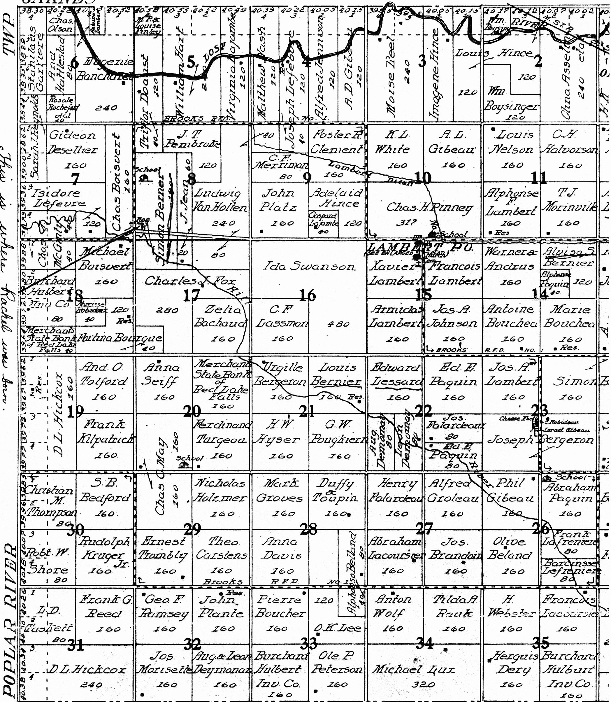
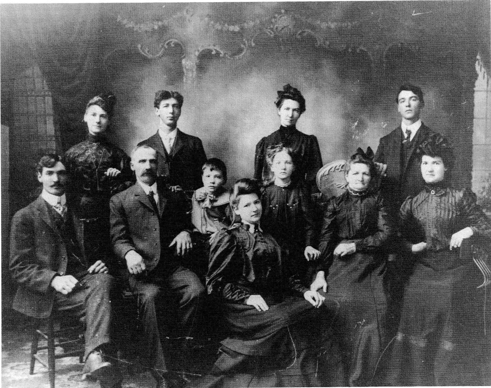

Additional
SIMEON BERNIER
This story was written with the assistance of Eva (Lessard) Prince, a granddaughter of Siméon and Célinère. As well, further information was gleaned from the books, The Oklee Community Story and A History of Red Lake County.
Siméon Bernier and his wife Célinère are listed in the 1910 Census of Lambert County, U.S.A., having come from Canada. They spoke French but could neither read nor write. They took out a homestead on the S.W. portion of Section 8, Township 150 west of Range 41 in Lambert County, Minnesota, U.S.A.
Siméon and Célinère belonged to the Roman Catholic Faith and, just as their culture was an inherent part of their lifestyle, so too were their religious practices of prayers in the home and Sunday attendance at Mass. They would have attended Mass during their first years in Lambert at the St. Francis Xavier Mission Chapel which had been erected under the leadership of the first missionary priest, the Reverend Father Pierre B. Champagne. A larger church was built under the direction of the area's first resident pastor, Father L. Guillaume (1890 - 1892). However, this new building was completely demolished by a windstorm so, of necessity, church services were again held in the small mission chapel. In 1896, Father Armchambault was appointed pastor of St. Xavier's and the present church was built in 1899. Later, about the time when two of their daughters, Lucy and Rachel, moved to Saskatchewan, the parish at Lambert was divided into two sections: the east half became the new parish of Oklee while the west half formed the parish at Brooks. This division may be the reason why years later Oklee was listed on baptismal certificates as the parish rather than Lambert.
Siméon donated one-half acre of land on which the school was built. Located on the N.W. portion of their land, it was only a short walk for their youngsters. All of Siméon's children attended this school and often referred to it as the Bernier School.
There was a river which ran through Lambert Township and crossed Siméon's land. It was in this river bed that one of his boys, Albert, cut his foot on a rusty wire. Infection set in and the doctor was called. Surgery was needed. In those days they had to make do with what they had. So the young boy, not yet school age, was operated on on the kitchen table in his home. With only whiskey as a pain killer, the foot was amputated below the knee. The long healing process began. Afterwards, the physician returned periodically to check on his young patient. However, Albert was naturally filled with much fear and so he would run and hide whenever the doctor came by. But each time, the doctor noticed the leg was healing nicely. Later, Albert fashioned himself a wooden limb and adapted well.
One day Siméon purchased a violin for his crippled lad. Within a matter of a few hours, Albert had mastered a couple of tunes. The fiddle became a special part of Albert's life and he shared his gift of music with all. Years later it was said that Albert played like Don Messer, a renowned Canadian fiddler.
Besides farming the land, Siméon had several cows. Prairie grass grew well and hay was plentiful so there was no problem with their winter feed. The Oklee Community Story reprinted an article from a 1902 Gazette which reads that various farmers, among them "...Siméon Bernier and others have averaged about $35.00 a month from the sale of their milk during the factory season." The milk was used to make cheese.
His daughter, Rachel, only months before her death in 1985, related the following about her father, Siméon: he was a farmer and a contractor. He raised cattle and grain which he took into northern Minnesota and traded for lumber which he then sold to others.
Siméon had a sharp mind and an eye for business. Also, he was a hard worker and was not afraid to undertake new tasks.
These are Siméon and Célinère's children:
1. Clara married Tom Toulouse. She remained in the States. Her children are:
Thomas, Frank, Albert (deceased), Rachel.
2. Alvida married Antoinette Lefèvre. They came to St. Brieux, Saskatchewan.
LAMBERT TOWNSHIP
Lambert Township Map taken from The Oklee Community Story.

Their children are:
Délima married Albert Dupuis
Noé married Cecile Dupuis
Onézime married Alice Baribeau
Isidore married Simone Dupuis
Napoleon married Therese Baribeau
Raymond married Yvonne Desjardin
Emile married Jeanne Roy
Marie Célinie Agna b. March 29, 1921, married James Davidson
Antonia Marie Josephe (Antoinette) b. March 31, 1923, married Felix Baribeau
* All of the boys and Delima are deceased.
3. Lucias married Alfred Lessard September 1905 in Lambert County, Minnesota.
Their children are:
Eva b. August 24, 1906 in Minnesota m. Charles Prince in 1925;
Lawrence b. July 7, 1915 in Minnesota m. Reine Lavoie in 1940
Lucille b. July 8, 1918 in Saskatchewan m. Rémi Arcand of Chilliwack, B.C.
Emma b. May 17, 1920 in Saskatchewan m. Phillippe Gagné of Noranda, Quebec
4. Délia married Napoléon Poulin. They went to Washington. They had twins. The girl survived and is living in North Yakima, Washington. Then they had twins a second time. They, along with their mother, Délia, died from the 'flu in 1918.
5. Léah married Antoine Boucher. Their children are:
Bert
Eleanor m. a Czechoslovakian
Raymond became a religious brother. He died the same year as his mother.
